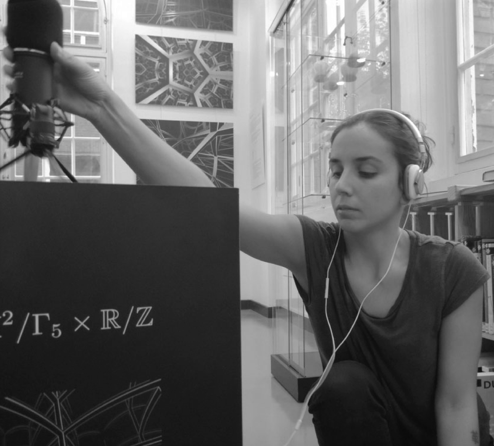

<div class='container'>
    <div id='bio_contact'>
        <div class="row">
            <div class="col-8">
                <div class="content-container">
                    <p><i>Artiste multimedia et chercheuse en informatique musicale</i></p>
                    <p><i>Chilienne et espagnole, née à Santiago du Chili</i></p>
                    <p><i>Vit et travaille à París.</i></p>   
                    <p>&#106;&#105;&#109;&#101;&#110;&#97;&#64;&#109;&#101;&#108;&#105;&#120;&#46;&#110;&#101;&#116;</p>                    
                     <!--<a href="https://drive.google.com/drive/folders/1rScl-L89lXcJEFqvfiNyADXV1XpftS86" target="blank">CV</a>-->
                </div>
                </br>
                </br>
                <div class="content-container">
                    <p> Artiste et chercheuse chilienne, Jimena Royo-Letelier arrive en France en 2009 pour intégrer l’École Polytechnique puis suivre un doctorat en physique mathématique. Également diplômée de l’IRCAM et de l'École Normale Supérieure de Cachan, elle partage son temps entre recherche en informatique musicale et projets artistiques qui font dialoguer son, mathématiques et des sujets socio-politiques. Entre 2015 et 2019 Jimena travaille en recherche et développement dans l'industrie de streaming musical. En 2016 elle crée le colectif <a href="http://iakeri.fr/" target="black">Iakeri</a> avec la compositrice Alice Guerlot-Kourouklis, avec qui elle partage la direction artistique. En 2019 le collectif Iakeri réalise l'installation sonore et visuelle "Murs Invisibles", oeuvre qui a été présenté en différents  expositions et festivals en France, Canada, Colombie et Chili. En 2016, elle crée avec Pierre Berger et Sergio Krakowski qui la pièce sonore interactive "Conversations", présentée pour la première fois dans le 7ème Congrès de Mathématiques à Berlin et qui fait partie à présent de la collection permanente du Universum, musée des Sciences et Technologies à Mexico (Mexique). A partir de 2017, avec Pierre Berger et Vincent Martial réalisent plusieurs sculptures sonores et plastiques pour le groupe  de recherche en art et sciences "Esthétopies", qui travaille sur l'exploration sensible des espaces mathématique.</p>
                </div>
                </br>
                </br>
                <div class="content-container">
                    <h3>Résidences de recherche et création artistique</h3>
                    <ul>
                        <li> <a href="https://www.tsonami.cl/2020/07/programa-de-residencias-resonancias-en-b-a-s-e-tsonami" target="black">B.A.S.E. Tsonami - Valparaíso</a>, Chili Mars 2021 - avec  <a href="http://jasminescu.com/" target="black"> Jasmina Al-Qaisi </a> et le collectif <a href="www.pajarxentrepuas.cl" target="black">Pajarx Entre Puas</a>[À VENIR]
                            <br>
                            <a href="https://www.goethe.de/ins/cl/es/kul/aus/21781491.html" target="black">
                            Programme de résidences artistiques RESONANCIAS</a> Goethe-Institut Chile et l’Institut Français du Chili</li>
                        
                        <li><a href="https://www.stereolux.org/" target="black">Stereolux - Nantes, France 2019</a>- <i>Murs Invisibles, Collectif Iakeri</i> - <i>Murs Invisibles, Collectif Iakeri</i></li>
                        
                        <li><a href="https://www.cirm-math.fr/" target="black">Centre International de Rencontres Mathématiques CIRM - Marseille, France 2019</a> - <i>Synchronisation chaotique, Esthétopies</i></li>
                        
                        <li><a href="https://easternbloc.ca/en" target="black">Eastern Bloc - Montréal,  Canada 2019</a> - <i>Murs Invisibles, Collectif Iakeri</i></li>
                        
                        <li><a href="https://www.math.univ-paris13.fr/laga/index.php" target="black">LAGA - Université Sorbonne Paris Nord - Villetaneuse, France 2018</a> - <i>Synchronisation chaotique, Esthétopies</i></li>
                        
                        <li><a href="https://chateauephemere.org/" target="black">Château Éphémère - Carrières-sous-Poissy, France  2018  et 2019</a> - <i>Murs Invisibles, Collectif Iakeri</i></li>
                    </ul>
                    <br>
                    <h3>Expositions muséales</h3>
                    <ul>
                        <li>
                            <a href="http://www.universum.unam.mx/exposiciones/imaginario-matematico" target="black">Imaginario matemático, Universum, Musée des sciences UNAM, Mexico, Mexique</a>
                        </li>
                    </ul>
                    <br>
                    <h3>Expositions collectives </h3>
                    <ul>
                        <li>
                            <a href="https://www.valdoise.fr/2020-exposition-en-cours.htm" target="black">
                                16 Novembre 2019 – 29 Mars 2020,
                                <i>Proliturgia, ordinatrices du temps présent<i>
                                Abbaye de Maubuisson, Saint Ouen l’Aumône, France
                            </a>
                        </li>                                
                        <li>
                             <a href="https://easternbloc.ca/en/exhibits-events/exhibits/invisible_walls" target="black">
                                20 - 28 Agosto 2019,
                                Galerie Eastern Bloc,
                                Montréal, Canada
                             </a>
                        </li>                        
                        <li> 
                            <a href="http://voltaje.co/ediciones-anteriores/6-2019/" target="black">
                                20 - 22 Septiembre 2019
                                Voltaje – Salon d'art et technologie 6° edition, La Feria del Millón,
                                Bogota, Colombie</a>
                        </li>                           
                        <li> 
                            <a href="http://scienceouverte.fr/Exposition-Esthetopies-Varietes-d-espaces-sensibles" target="black">19 Janvier - 10 Mars 2019 Esthétopies : Variétés d'espaces sensibles, Château de Ladoucette, Drancy, France</a>
                        <li> 
                            </p><a href=" http://nanterredigital.fr/festival" target="black">6 - 22 Décembre 2017 Festival Nanterre Digital, L’Agora de Nanterre,  Nanterre, France</a>
                        </li>                           
                        <li>
                            <a href="http://esthetopies.ihp.fr" target="black" target="black">8 Mars - 8 Juillet 2017 Esthétopies – Variétés d’espaces, Institut Henri Poincaré, Paris - France</a>
                        </li>                           
                        <li>
                            <a href="https://inclusivesoundspaces.wordpress.com/installations" target="black">1ero - 2do Juillet 2017  Activating Inclusive Sound Spaces, University of Huddersfield - Inglaterra</a>
                        </li>                           
                        <li>
                            <a href="http://womeninmath.ny/venue/bonn-germany" target="black">10 Novembre 2016 Proyection au vernissage exposition Women Of Mathematics, Bonn - Allemagne</a>
                        </li>                                
                        <li>
                            </p><a href="http://www.7ecm.de/program/cultural_program.html" target="black"> 18 - 22 Juillet 2016 7° Congrès Européen de Mathématiques, Berlin - Allemagne</a>
                        </li>                           
                    </ul>
                    <br>
                </div>
            </div>
            <div class="col-4">
                <div class="content-container">
                    
                    <p style="font-size:11px;" align="center"><a href="https://www.math.univ-paris13.fr/~berger" target="blank"> Photo: Pierre Berger</a></p>
                </div>
            </div>
        </div>
    </div>
</div>
